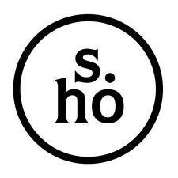

Studio Hamed OuattaraDossier institutionnel · Parco Thomas Sankara, Rome
Sculpture monumentale en acier Corten.
Note d'intention et dossier de présentation.
Hamed Ouattara, artiste designer pluridisciplinaire
Ouagadougou, le 6 octobre 2026 — deuxième édition
Deuxième édition. La première édition de ce dossier, du 17 août 2026, précédait l'achèvement de la fabrication. Elle donnait onze rangées de bossages et cent quarante-quatre au total. L'œuvre achevée en porte douze rangées et cent cinquante-deux, conformément à la planche des faces. La présente édition rétablit le comptage exact et la lecture qui en découle, et rend compte de l'état achevé de l'œuvre.
Le Burkina Faso dispose d'un Mémorial national élevé à la mémoire du Camarade Président Thomas Sankara. Le présent monument s'inscrit dans une démarche complémentaire et distincte : porter la mémoire du Président auprès de la communauté burkinabè établie en Europe, et la rendre visible dans un espace public italien fréquenté quotidiennement.
L'œuvre est une commande du Camarade Madi Sakandé, de la diaspora burkinabè en Italie, ancien pionnier de la Révolution Démocratique et Populaire, qui entend par ce geste honorer la mémoire de son père spirituel dans le Parco Thomas Sankara à Rome, en Italie.
La présente note expose les choix de conception qui relèvent de ma responsabilité d'artiste. Le parti pris retenu est celui d'une sculpture contemporaine en acier plutôt que d'une statue figurative. Ce choix répond à trois considérations.
La première est la nature du lieu. Il s'agit d'un parc urbain traversé et non d'un site commémoratif dédié. Une œuvre verticale, sobre et lisible sous tous les angles s'y intègre mieux qu'une figure en ronde-bosse, qui suppose un point de vue privilégié et un dégagement particulier.
La deuxième est la durabilité. L'acier Corten résiste sans entretien aux conditions climatiques européennes, ce qui garantit la tenue de l'œuvre dans le temps, sans intervention de maintenance à la charge des autorités locales.
La troisième est la cohérence avec ma pratique. Je travaille le métal depuis plus de vingt ans, dans un langage plastique développé à Ouagadougou et reconnu internationalement. Le monument est réalisé dans cette écriture, ce qui en fait une œuvre burkinabè à part entière, et non une réalisation exécutée dans un style d'emprunt.
Le portrait du Camarade Président Thomas Sankara est pleinement identifiable. Le béret militaire à l'étoile, le regard, la barbe et la ligne du visage sont rendus avec fidélité, et l'œuvre se lit sans hésitation, de loin comme de près. Le portrait retenu est celui que le peuple burkinabè connaît et reconnaît.
Sa singularité tient à la manière dont il est obtenu. Le visage n'est ni peint ni gravé : il est découpé au travers de la tôle. Les zones sombres du portrait sont des vides traversants, les zones claires sont l'acier laissé en place, et c'est le contraste entre le métal et le jour qui construit la figure, avec la netteté d'un grand pochoir.
Ce procédé donne au portrait une présence changeante. Au soleil du matin il se détache nettement, à midi il s'apaise, au crépuscule la pénombre intérieure du monument lui donne de la profondeur. Le Président n'y est pas figé dans une pose : il est présent différemment à chaque heure du jour.
L'acier Corten a une propriété rare : il rouille en surface, et cette rouille le protège au lieu de le détruire. Il ne se dégrade pas, il se patine. Exposé aux pluies, aux hivers, aux décennies, il fonce, il se stabilise, il tient.
Aucun autre matériau ne dit mieux ce qu'il y avait à dire. Une pensée juste ne se conserve pas sous vitrine, elle s'expose, elle prend les coups, et c'est en les prenant qu'elle durcit. La couleur de ce métal est celle de la latérite, la terre rouge de notre pays. Le monument portera, en Europe, la couleur du sol burkinabè.
Les faces du monument sont couvertes de bossages, ces demi-sphères frappées dans l'acier qui constituent depuis plus de vingt ans le langage de mon atelier. Ils viennent des grandes architectures de terre soudano-sahéliennes, de Djenné, de Tombouctou, de Bobo-Dioulasso, de ces murs épais hérissés qui respirent sous la lumière rasante.
Mais ils disent aussi autre chose. Un bossage est un coup. Il faut frapper la tôle pour qu'il apparaisse. Cette grille régulière est le compte du travail répété, du geste recommencé, de l'effort collectif qui construit. Elle est le peuple autour de l'homme. Le visage est ouvert dans le métal, mais c'est le métal frappé qui l'entoure et le tient.
Les deux faces qui portent le visage sont tournées vers le nord et vers le sud.
Celle du sud regarde l'Afrique : le Sahel, le Burkina Faso, le pays dont le monument porte déjà la terre, puisque la couleur de l'acier Corten est celle de la latérite. Celle du nord fait face à l'Europe, au continent qui l'accueille.
Ce n'est pas seulement une affaire de boussole. Le Nord et le Sud sont les mots dont le Camarade Président Thomas Sankara s'est servi pour parler de la dette, de la tutelle et de la dignité des peuples. Le monument ne tourne le dos ni à l'un ni à l'autre : il tient les deux regards en même temps, pour celui qui arrive comme pour celui qui repart. Dressé sur cet axe, il devient un repère — pour sa nation, et pour le monde.
Cet axe fait partie de l'œuvre, au même titre que la découpe du visage. Il n'est pas une option d'implantation laissée à l'appréciation du chantier : le socle sera coulé en conséquence, et les faces au visage regarderont le nord et le sud.
Rien dans cette trame n'est laissé au hasard. Les nombres qu'elle porte viennent de mes recherches sur la chronologie de la Révolution Démocratique et Populaire et sur le 15 octobre 1987. Je les ai arrêtés avant de tracer la première ligne, et la géométrie du monument s'est construite autour d'eux, dans les contraintes de proportion et de fabrication qui sont celles de la tôle.
| Élément du monument | Ce qu'il compte |
|---|---|
| 12 rangées sur chaque face | Les douze compagnons tombés avec lui |
| 4 colonnes de bossages | Le 4 août 1983, l'ouverture de la Révolution |
| 2 faces portant le visage | Les deux directions, le nord et le sud |
Le 15 octobre 1987, le Camarade Président Thomas Sankara a été assassiné à Ouagadougou avec douze de ses compagnons. Ils reposent aujourd'hui auprès de lui au Mausolée. Le monument porte douze rangées de bossages, sur chacune de ses quatre faces.
Les quatre colonnes disent le 4 août 1983, le jour où s'est ouverte la Révolution Démocratique et Populaire. La sculpture elle-même a quatre faces, et son visage regarde dans deux directions opposées, pour celui qui arrive comme pour celui qui repart.
La trame est la même sur les quatre faces : quarante-huit emplacements, douze rangées de quatre. Sur les deux faces qui portent le visage, vingt de ces emplacements sont rendus au vide — seize pour le visage, quatre pour le bloc du nom. Il en reste vingt-huit. Là où le métal n'a pas été frappé, c'est lui. Le monument porte au total cent cinquante-deux bossages.
Ces nombres viennent de mes recherches, et je les ai arrêtés avant de dessiner. Une sculpture de mémoire qui ne compterait rien ne serait qu'un décor : celle-ci devait porter une date et des noms, et la forme s'est construite autour d'eux.
Le monument est un prisme rectangulaire vertical en acier Corten, creux, dressé sur un socle en béton coulé sur place.
Deux faces opposées portent le portrait du Camarade Président Thomas Sankara, obtenu par découpe traversante en espace négatif, ainsi que son nom complet et ses dates. Les deux autres faces ne portent aucune image : elles sont couvertes de la seule texture de bossages, silence de matière qui équilibre la force du visage.
Toutes les faces sont travaillées dans la même trame de bossages hémisphériques en relief. La signature de l'artiste est découpée dans l'acier, en bas d'une face, dans la même technique que le portrait.
| Caractéristique | Valeur |
|---|---|
| Forme | Prisme rectangulaire droit, creux |
| Hauteur | 200 cm, hors socle |
| Section | 70 × 70 cm |
| Matériau | Acier Corten, épaisseur 6 mm |
| Portrait | 2 faces opposées, découpe traversante en espace négatif |
| Texture | Bossages hémisphériques, diamètre 139 mm, relief 20 à 25 mm |
| Entraxes | 167 mm à l'horizontale, 165 mm à la verticale |
| Nombre de bossages | 48 par face de texture, 28 par face portrait, 152 au total |
| Socle | Béton armé coulé sur place, à gradins |
| Finition | Corten naturel, oxydation libre et évolutive |
| Poids estimé | Environ 370 kg |
L'œuvre est destinée au Parco Thomas Sankara de Rome, Via Ugo della Seta, IIIe Municipio, seul espace public en Europe entièrement dédié à la mémoire du Président du Burkina Faso.
La fabrication est achevée. Les tôles ont été travaillées en Italie par des ateliers spécialisés pour la découpe au laser et le formage des bossages. L'assemblage, la soudure et la finition ont été réalisés personnellement par l'artiste à Bologne, et l'acier a pris sa première oxydation. Restent le transport, le coulage du socle et l'installation à Rome.
Il a été envisagé d'intégrer au monument un code QR permettant au public d'accéder à une notice sur la vie et l'action du Camarade Président Thomas Sankara. La démarche est pertinente, en particulier auprès du public italien et des jeunes générations, et je la soutiens dans son principe.
Je recommande toutefois que ce code ne soit pas découpé ni gravé dans la sculpture elle-même, mais porté par une plaque distincte, implantée à proximité immédiate de l'œuvre.
Trois raisons motivent cette recommandation.
D'abord la nature de l'objet. Une sculpture est une œuvre, non un support de signalétique. Introduire dans sa composition un élément fonctionnel de nature informatique en modifierait la lecture et affaiblirait la portée mémorielle de l'ensemble.
Ensuite la pérennité. Un code QR renvoie à une adresse en ligne, dont la durée de vie se mesure en années. Le monument, lui, est conçu pour durer des décennies. Un code devenu inactif et gravé dans l'acier resterait visible indéfiniment, sans possibilité de correction, alors qu'une plaque se remplace aisément.
Enfin la lisibilité. La trame de bossages et la découpe du portrait forment une composition réglée. L'insertion d'un motif géométrique étranger à cette trame en romprait l'équilibre et nuirait à la lecture du visage.
La solution de la plaque séparée, en acier Corten identique pour l'unité visuelle, permet de conserver l'intégrité de l'œuvre tout en offrant au public l'information souhaitée, et laisse la possibilité de mettre à jour le contenu dans le temps. Cette option reste ouverte et peut être étudiée avec les autorités concernées.
Un monument installé à l'étranger n'est pas une œuvre qui s'éloigne du pays, c'est une œuvre qui l'avance. Elle porte à Rome, dans un parc public que les Romains traversent chaque jour, le nom et le visage d'un chef d'État africain qui a refusé la dette, refusé la tutelle et défendu la dignité de son peuple.
Elle est réalisée par un artiste burkinabè, dans un langage plastique né à Ouagadougou, à partir d'une technique forgée dans un atelier de la Route du SIAO. Ce que ce monument exporte n'est pas un souvenir, c'est une compétence, une esthétique et une mémoire vivantes, produites au Burkina Faso et reconnues au dehors.
C'est à ce titre que je soumets ce dossier, pour information et pour adoption, aux autorités burkinabè compétentes en matière de mémoire nationale et de culture.
La planche ci-dessous présente les deux types de faces du monument. Les faces portrait, au nombre de deux et opposées l'une à l'autre, portent le visage, le nom et la signature découpés au travers de la tôle, avec les bandes latérales du visage laissées lisses. Les deux faces de texture ne comportent aucune découpe et sont couvertes de bossages sur toute leur hauteur.
Ce document est illustratif. Les plans techniques cotés, destinés aux ateliers de fabrication, sont disponibles séparément.
Hamed Ouattara, de son nom civil Ouattara Mohamed Sékou, est artiste designer pluridisciplinaire, né à Ouagadougou. Il a fondé le Studio Hamed Ouattara en 2002, atelier organisé en compagnonnage avec une quinzaine d'artisans, sur la Route du SIAO à Ouagadougou.
Sa pratique repose sur la transformation de métaux industriels récupérés en pièces sculpturales qui portent la mémoire et l'identité africaines. Ses œuvres figurent dans les collections permanentes du V&A Museum de Londres, du Centre Pompidou de Paris, du Vitra Design Museum, du Brooklyn Museum de New York et du Denver Art Museum de Denver. Il est représenté exclusivement par la Friedman Benda Gallery à New York.
Il est diplômé de l'École Nationale Supérieure de Création Industrielle de Paris, Chevalier de l'Ordre du mérite des Arts depuis 2014, lauréat de l'Africa Design Award la même année, et Président de l'Association Art Contemporain du Burkina Faso.
Fait à Ouagadougou, le 6 octobre 2026
OUATTARA Mohamed Sékou, dit Hamed Ouattara
Artiste designer pluridisciplinaire
Studio Hamed Ouattara, Boulevard Tansoba Kiema, Route du SIAO, 01 BP 3843 Ouagadougou 01
studiohamedouattarabf@gmail.com · +226 66 30 63 63 · hamedouattara.com
Dossier institutionnel, deuxième édition — SANKARA, L'ÉTERNEL VEILLEUR, Hamed Ouattara, 2026, acier Corten. Œuvre déposée auprès du Bureau Burkinabè du Droit d'Auteur.